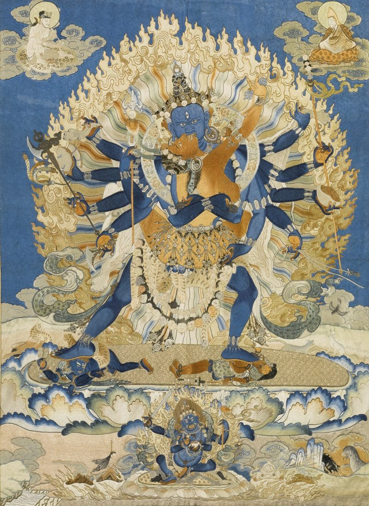
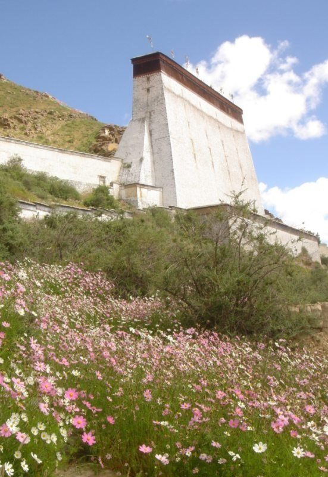

Embroidered and Appliqué Thangkas: Textile Treasures of the Himalaya
When most people picture a thangka, they imagine a painting on cotton. But the Himalayan tradition has another, equally remarkable branch: thangkas made entirely of textile. Cut and stitched silk, dense embroidery, and woven silk tapestry have all been used to create sacred images, from small personal pieces to enormous banners large enough to cover a hillside during a monastery festival.
This guide introduces the main kinds of textile thangkas, explains how they are made and used, and offers practical advice on recognizing and caring for them.

Why Make a Thangka from Textile?
In Tibetan tradition, textile images were often regarded as especially precious. Silk was costly and frequently imported, and the labor needed to stitch a large image could take a team of artisans many months. A textile thangka was therefore a major offering, often commissioned by a monastery, a noble family, or a ruler. Textiles also had practical advantages: they are lighter than painted canvas of the same size and, when made well, can be rolled and transported for very large formats.
The Main Types of Textile Thangka
Appliqué thangkas
An appliqué thangka is built from many pieces of colored silk cut into shapes and stitched onto a backing. Fine outlines are usually made with couched cord, often a horsehair core wrapped in silk thread, stitched down along the edges of each shape. This cord gives appliqué thangkas their crisp, slightly raised outlines. Details such as faces may be painted or embroidered on top.
Embroidered thangkas
Embroidered thangkas are created with needle and thread, using satin stitch, couching, and other techniques to build up the image. Some of the finest examples were made in imperial workshops in China, especially during the early Ming dynasty, as gifts for Tibetan religious leaders. Their shimmering, densely stitched surfaces can be extraordinarily detailed, and a few have sold for record prices at international auctions.
Woven silk thangkas
Woven thangkas, made in a silk tapestry technique, form the image directly in the weave rather than on top of it. They are rare and require highly specialized looms and weavers. Like embroidered pieces, many were produced for imperial or monastic patrons and are now treasured in museum collections.
Giant Festival Thangkas
The most spectacular textile thangkas are the giant appliqué banners displayed once a year at major monasteries. In Tibet, monasteries such as Tashilhunpo built tall, flat-fronted walls specifically for hanging these images, and Drepung near Lhasa unveils a huge thangka on a hillside at dawn during the Shoton festival. In Bhutan, many dzongs display a great appliqué image called a thongdrol at the end of their annual tsechu festivals.
The word thongdrol is often translated as "liberation on sight," reflecting the belief that simply seeing the image brings great blessing. These banners can be dozens of meters tall and are usually shown only for a few hours, often in the early morning, before being carefully rolled and stored for another year. Their size is a reason they are made of textile rather than paint: a painted canvas of that scale would be impossibly heavy and fragile.
Textile Thangkas in Daily Monastic Life
Not every textile thangka is a giant festival banner. Smaller appliqué and embroidered images were made to hang in assembly halls, to be carried in processions, or to be displayed on particular days of the ritual calendar. Some monasteries kept sets of textile thangkas showing a sequence of figures, such as lineage masters or the sixteen arhats, which were brought out together for special ceremonies and then returned to storage.
Textiles were also used around painted thangkas. Silk brocade borders, protective curtains, and the thin veils that hang in front of many paintings belong to the same culture of precious cloth. In wealthy monasteries, the mount of a painted thangka could itself be a significant offering, using imported brocades with dragons, clouds, or auspicious patterns. Looking closely at these textiles can reveal trade routes, workshop traditions, and the generosity of past patrons.
Today, workshops in Bhutan, Nepal, and Tibetan communities in India continue to make appliqué and embroidered thangkas, including new giant banners commissioned for festivals, so this textile tradition remains very much alive.

How an Appliqué Thangka Is Made
- A full-size drawing is made, following the same iconometric rules as a painted thangka.
- Templates are cut from the drawing and used to cut matching pieces of silk in each color.
- The pieces are stitched to a backing cloth, often layered to create shading and depth.
- Outlines are formed by couching down silk-wrapped cord along every edge.
- Faces and fine details are embroidered or painted, and the finished piece is mounted with borders like a painted thangka.
Because the design starts as a measured drawing, textile thangkas share the same proportions and iconography as painted ones. The difference lies in how color and line are achieved: through cut silk and stitched cord instead of pigment and brush.
Recognizing Textile Thangkas
Up close, textile thangkas are usually easy to identify. Look for the raised outlines of couched cord, visible stitches, the sheen of silk, and slight changes in texture between pieces of fabric. Embroidered thangkas show directional stitching that catches the light differently from different angles. If a thangka appears to have outlines that are slightly raised and soft rather than painted lines, it is likely appliqué.
Caring for Textile Thangkas
Silk is more sensitive to light than mineral paint, so textile thangkas fade quickly in direct sun. Display them in low, indirect light and consider rotating them, so each piece has periods of rest in storage. Keep humidity steady to avoid mold and brittleness, and protect them from dust and insects. Never wash or iron a textile thangka; if it needs cleaning or repair, consult a textile conservator. Many of the same principles apply to painted works, and our guide to caring for and framing a thangka covers light, humidity, and storage in more detail. For comparison with the painted tradition, our article on preparing a thangka canvas shows how differently a painted image begins.
Frequently Asked Questions
Are textile thangkas less valuable than painted ones?
Not at all. Fine appliqué and embroidered thangkas were often among the most prestigious commissions and can be extremely valuable.
What is a thongdrol?
A thongdrol is a very large appliqué thangka displayed during festivals in Bhutan, believed to bring blessing to all who see it.
How can I tell embroidery from appliqué?
Embroidery builds the image from thread stitches; appliqué uses cut pieces of fabric outlined with couched cord.
Can textile thangkas be framed?
Yes, but they should be framed by a textile specialist using conservation materials and UV-filtering glazing, with no adhesives.
Conclusion
Textile thangkas show how far devotion and craftsmanship can go. Whether it is a small embroidered image or a festival banner unrolled across a hillside at sunrise, each one is built from countless cuts and stitches guided by the same sacred proportions as a painted thangka. Learning to recognize them adds an entirely new dimension to the appreciation of Himalayan art. The next time you meet one in a museum or monastery, look closely at the stitches and cords that make it.